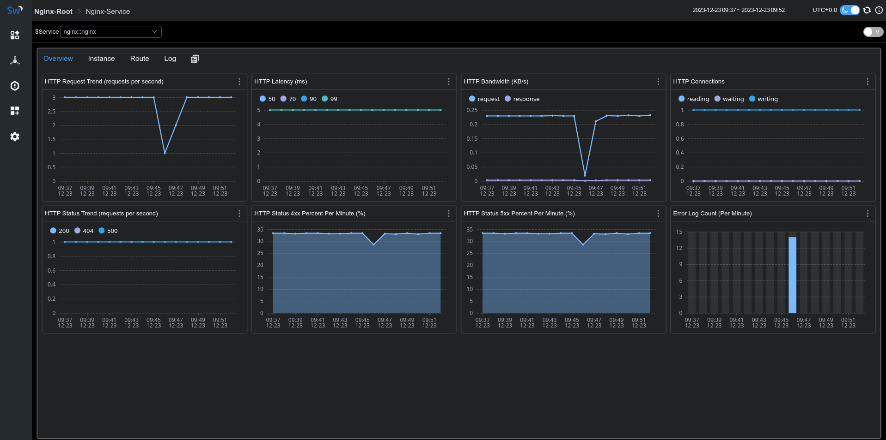
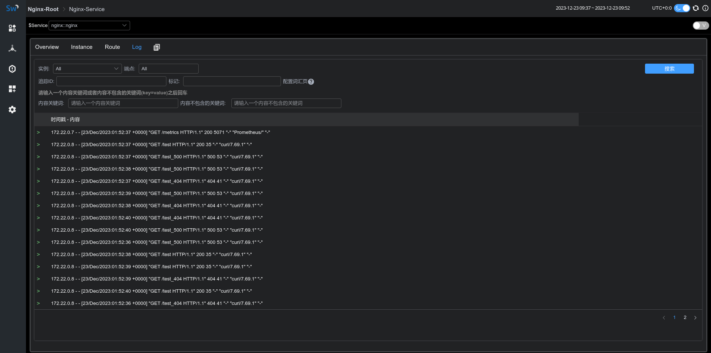

Monitoring Nginx with SkyWalking
Background
Apache SkyWalking is an open-source application performance management system that helps users collect and aggregate logs, traces, metrics, and events, and display them on the UI.
In order to achieve monitoring capabilities for Nginx, we have introduced the Nginx monitoring dashboard in SkyWalking 9.7, and this article will demonstrate the use of this monitoring dashboard and introduce the meaning of related metrics.
Setup Monitoring Dashboard
Metric Define and Collection
Since nginx-lua-prometheus is used to define and expose metrics, we need to install lua_nginx_module for Nginx, or use OpenResty directly.
In the following example, we define four metrics via nginx-lua-prometheus and expose the metrics interface via nginx ip:9145/metrics:
- histogram: nginx_http_latency，monitoring http latency
- gauge: nginx_http_connections，monitoring nginx http connections
- counter: nginx_http_size_bytes，monitoring http size of request and response
- counter: nginx_http_requests_total，monitoring total http request numbers
http {
log_format main '$remote_addr - $remote_user [$time_local] "$request" '
'$status $body_bytes_sent "$http_referer" '
'"$http_user_agent" "$http_x_forwarded_for"';
access_log /var/log/nginx/access.log main;
lua_shared_dict prometheus_metrics 10M;
# lua_package_path "/path/to/nginx-lua-prometheus/?.lua;;";
init_worker_by_lua_block {
prometheus = require("prometheus").init("prometheus_metrics")
metric_bytes = prometheus:counter(
"nginx_http_size_bytes", "Total size of HTTP", {"type", "route"})
metric_requests = prometheus:counter(
"nginx_http_requests_total", "Number of HTTP requests", {"status", "route"})
metric_latency = prometheus:histogram(
"nginx_http_latency", "HTTP request latency", {"route"})
metric_connections = prometheus:gauge(
"nginx_http_connections", "Number of HTTP connections", {"state"})
}
server {
listen 8080;
location /test {
default_type application/json;
return 200 '{"code": 200, "message": "success"}';
log_by_lua_block {
metric_bytes:inc(tonumber(ngx.var.request_length), {"request", "/test/**"})
metric_bytes:inc(tonumber(ngx.var.bytes_send), {"response", "/test/**"})
metric_requests:inc(1, {ngx.var.status, "/test/**"})
metric_latency:observe(tonumber(ngx.var.request_time), {"/test/**"})
}
}
}
server {
listen 9145;
location /metrics {
content_by_lua_block {
metric_connections:set(ngx.var.connections_reading, {"reading"})
metric_connections:set(ngx.var.connections_waiting, {"waiting"})
metric_connections:set(ngx.var.connections_writing, {"writing"})
prometheus:collect()
}
}
}
}
In the above example, we exposed the route-level metrics, and you can also choose to expose the host-level metrics according to the monitoring granularity:
http {
log_by_lua_block {
metric_bytes:inc(tonumber(ngx.var.request_length), {"request", ngx.var.host})
metric_bytes:inc(tonumber(ngx.var.bytes_send), {"response", ngx.var.host})
metric_requests:inc(1, {ngx.var.status, ngx.var.host})
metric_latency:observe(tonumber(ngx.var.request_time), {ngx.var.host})
}
}
or upstream-level metrics：
upstream backend {
server ip:port;
}
server {
location /test_upstream {
proxy_pass http://backend;
log_by_lua_block {
metric_bytes:inc(tonumber(ngx.var.request_length), {"request", "upstream/backend"})
metric_bytes:inc(tonumber(ngx.var.bytes_send), {"response", "upstream/backend"})
metric_requests:inc(1, {ngx.var.status, "upstream/backend"})
metric_latency:observe(tonumber(ngx.var.request_time), {"upstream/backend"})
}
}
}
After defining the metrics, we start nginx and opentelemetry-collector to collect the metrics and send them to the SkyWalking backend for analysis and storage.
Please ensure that job_name: 'nginx-monitoring', otherwise the reported data will be ignored by SkyWalking.
If you have multiple Nginx instances, you can distinguish them using the service and service_instance_id labels：
receivers:
prometheus:
config:
scrape_configs:
- job_name: 'nginx-monitoring'
scrape_interval: 5s
metrics_path: "/metrics"
static_configs:
- targets: ['nginx:9145']
labels:
service: nginx
service_instance_id: nginx-instance
processors:
batch:
exporters:
otlp:
endpoint: oap:11800
tls:
insecure: true
service:
pipelines:
metrics:
receivers:
- prometheus
processors:
- batch
exporters:
- otlp
If everything goes well, you will see the metric data reported by Nginx under the gateway menu of the skywalking-ui:

Access & Error Log Collection
SkyWalking Nginx monitoring provides log collection and error log analysis. We can use fluent-bit to collect and report access logs and error logs to SkyWalking for analysis and storage.
Fluent-bit configuration below defines the log collection directory as /var/log/nginx/.
The access and error logs will be reported through rest port 12800 of oap after being processed by rewrite_access_log and rewrite_error_log functions:
[SERVICE]
Flush 5
Daemon Off
Log_Level warn
[INPUT]
Name tail
Tag access
Path /var/log/nginx/access.log
[INPUT]
Name tail
Tag error
Path /var/log/nginx/error.log
[FILTER]
Name lua
Match access
Script fluent-bit-script.lua
Call rewrite_access_log
[FILTER]
Name lua
Match error
Script fluent-bit-script.lua
Call rewrite_error_log
[OUTPUT]
Name stdout
Match *
Format json
[OUTPUT]
Name http
Match *
Host oap
Port 12800
URI /v3/logs
Format json
In the fluent-bit-script.lua, we use LOG_KIND tag to distinguish between access logs and error logs.
To associate with the metrics, please ensure that the values of service and serviceInstance are consistent with the metric collection definition in the previous section.
function rewrite_access_log(tag, timestamp, record)
local newRecord = {}
newRecord["layer"] = "NGINX"
newRecord["service"] = "nginx::nginx"
newRecord["serviceInstance"] = "nginx-instance"
newRecord["body"] = { text = { text = record.log } }
newRecord["tags"] = { data = {{ key = "LOG_KIND", value = "NGINX_ACCESS_LOG"}}}
return 1, timestamp, newRecord
end
function rewrite_error_log(tag, timestamp, record)
local newRecord = {}
newRecord["layer"] = "NGINX"
newRecord["service"] = "nginx::nginx"
newRecord["serviceInstance"] = "nginx-instance"
newRecord["body"] = { text = { text = record.log } }
newRecord["tags"] = { data = {{ key = "LOG_KIND", value = "NGINX_ERROR_LOG" }}}
return 1, timestamp, newRecord
end
After starting fluent-it, we can see the collected log information in the Log tab of the monitoring panel：

Meaning of Metrics
| Metric Name | Unit | Description | Data Source |
|---|---|---|---|
| HTTP Request Trend | The increment rate of HTTP requests | nginx-lua-prometheus | |
| HTTP Latency | ms | The increment rate of the latency of HTTP requests | nginx-lua-prometheus |
| HTTP Bandwidth | KB | The increment rate of the bandwidth of HTTP requests | nginx-lua-prometheus |
| HTTP Connections | The avg number of the connections | nginx-lua-prometheus | |
| HTTP Status Trend | % | The increment rate of the status of HTTP requests | nginx-lua-prometheus |
| HTTP Status 4xx Percent | % | The percentage of 4xx status of HTTP requests | nginx-lua-prometheus |
| HTTP Status 5xx Percent | % | The percentage of 4xx status of HTTP requests | nginx-lua-prometheus |
| Error Log Count | The count of log level of nginx error.log | fluent-bit |